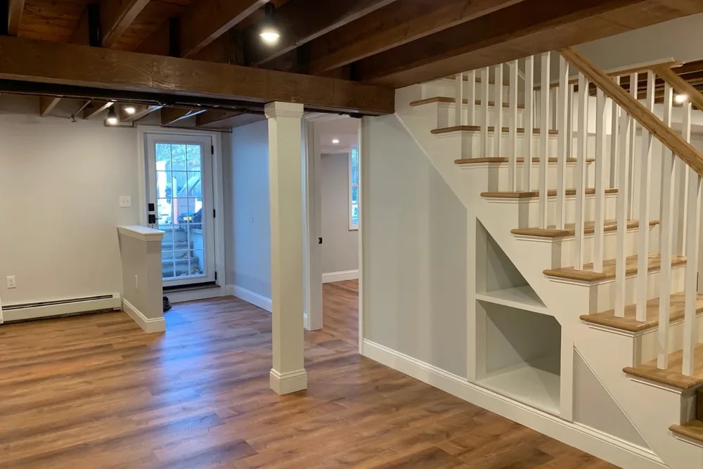
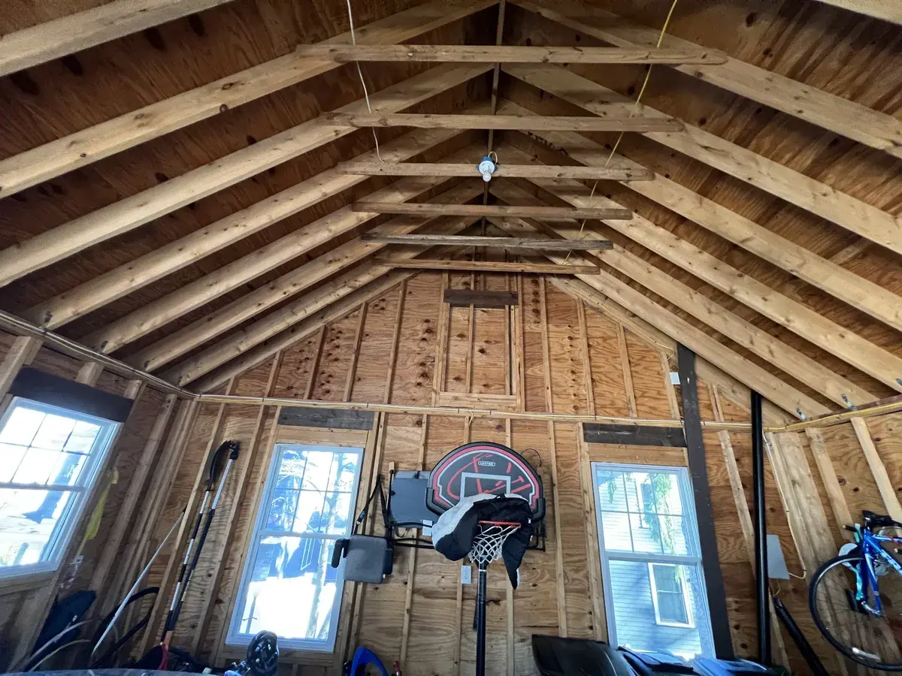
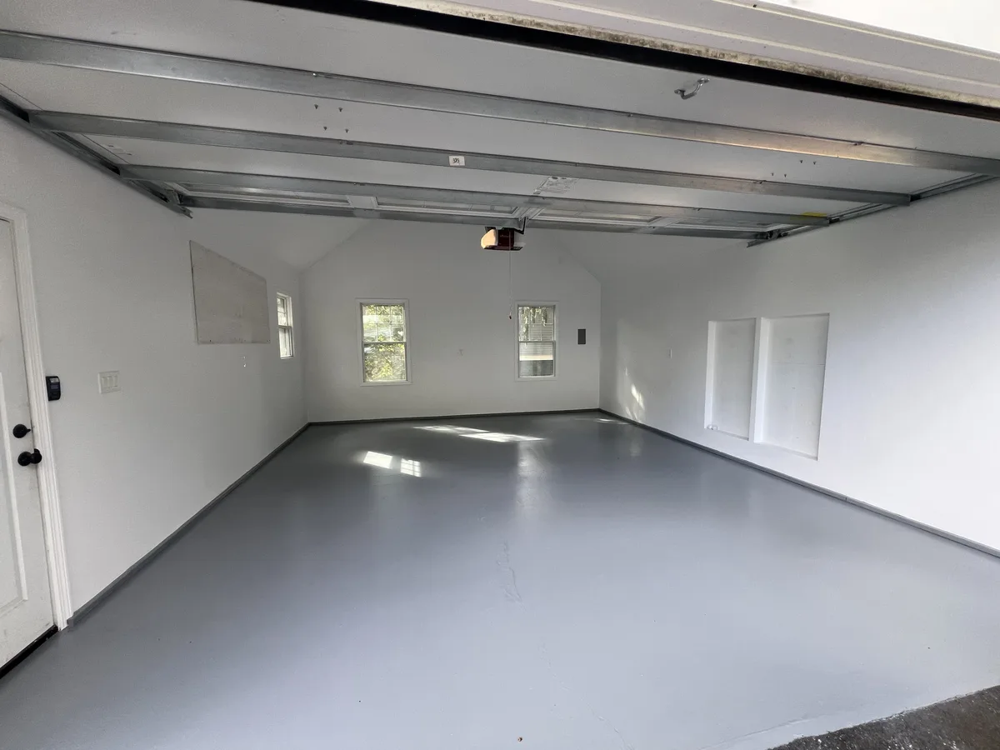
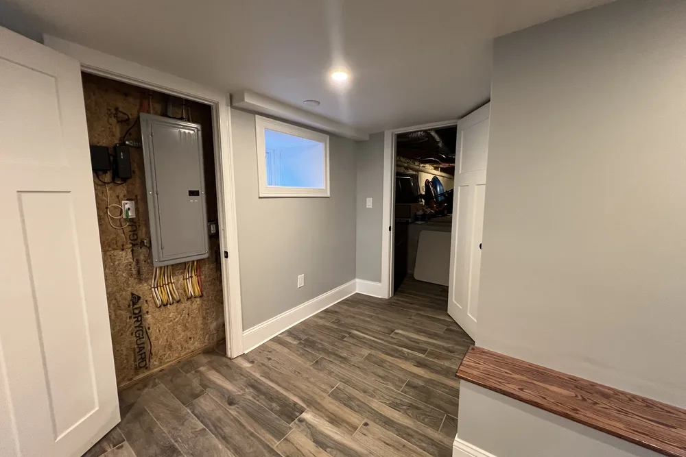
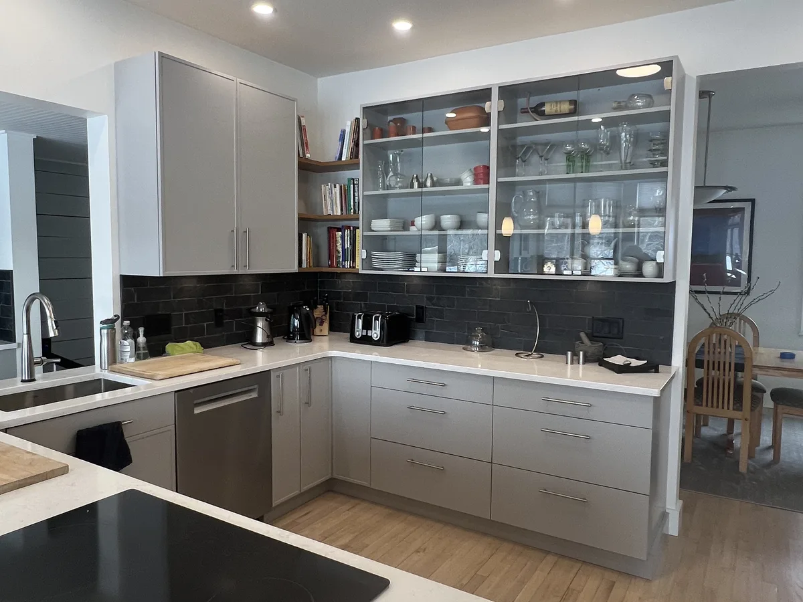

Interior painters in Massachusetts
Interior Painters North Shore MA who fix the walls before the paint goes on
Interior painters at DeFaria Construction repair drywall and plaster, then prime and paint walls, ceilings, trim and doors so the finish stays clean for years. Owner-led work across Essex and Middlesex County, Massachusetts.
Our work
Bare walls to a bright, finished room
A real DeFaria project: raw framing at the start, then insulation, drywall, primer and paint. This is the prep that sits under every wall we paint.
Get a Free Estimate
The short answer
What do interior painters do that a weekend project does not?

Interior painters are paid for preparation as much as for paint. A professional job protects the floors and furniture, repairs every crack, hole and nail pop, sands and primes the patches, and then lays down two even coats with straight lines at ceilings and trim. The result looks better and lasts years longer.
- Walls and ceilings, two finish coats.
- Trim, baseboard, doors and window casing.
- Drywall and plaster repair before painting.
- Kitchen and bathroom cabinet painting.
- Stairwells, high ceilings and accent walls.
- Clean-up and a walkthrough room by room.
Because DeFaria is a remodeling company and not a paint-only crew, the same team that paints also fixes the walls underneath.
Cost
How much does interior painting cost in Massachusetts?
These are typical 2026 ranges in Essex and Middlesex County, including labor and quality paint:
| Scope | Typical 2026 range | What moves it |
|---|---|---|
| One room, walls only | $450 to $1,200 | Room size, color change, patching |
| Ceiling of a room | $250 to $600 | Height, stains, texture |
| Interior door, both sides | $100 to $200 per door | Panel style, oil to latex conversion |
| Trim and baseboard | $2 to $5 per linear foot | Profile detail, condition |
| 1,500 sq ft home, walls, ceilings, trim | $6,000 to $12,000 | Number of rooms, repairs |
| 2,000 sq ft home, walls, ceilings, trim | $8,000 to $16,000 | Stairwells, high ceilings, plaster |
| Kitchen cabinet painting | $4,000 to $9,000 | Number of doors, spray or brush |
A dramatic color change, dark colors, water stains and plaster repairs add coats and time. DeFaria quotes a fixed price per room, so you can choose exactly what to paint.
Prep
Prep is the job: what happens before the first coat
Paint exposes preparation. Every dent, ridge and crack you skip shows more after a fresh coat, especially in the low winter light that rakes across New England walls.
- Furniture moved and covered, floors protected with drop cloths.
- Outlet covers and hardware removed, not painted around.
- Cracks opened and taped, holes patched, nail pops re-screwed.
- Patches sanded flush and spot primed so they do not flash through.
- Stains sealed with a stain-blocking primer.
- Gaps at trim caulked so lines look crisp.
- Glossy surfaces scuffed and primed so new paint grips.
Larger wall problems are handled by our drywall and plaster team before painting starts.
Real DeFaria work
From raw framing to painted, finished walls
Before and after from a real DeFaria conversion: open studs and rafters, then insulation, drywall, mud, primer and two coats of paint until the room is bright and finished.


Older homes
Painting older homes: plaster, lead paint and oil-based trim

Much of the housing in Lynn, Salem, Beverly and the older towns of the North Shore was built long before latex paint. That brings three things to plan for:
- Plaster walls: cracks are re-secured and taped, and loose areas are repaired before painting so they do not show.
- Lead paint: in homes built before 1978, sanding or scraping old paint requires lead-safe work practices under federal and Massachusetts rules, with containment and careful cleanup.
- Oil-based trim: latex will peel off old oil paint unless the surface is cleaned, scuffed and primed with a bonding primer first.
We test and plan for these at the walkthrough, so the price and schedule do not change once work begins.
Sheens
Choosing the right paint sheen for each room
The sheen matters as much as the color. It changes how a wall hides flaws and how well it cleans.
- Flat on ceilings, to hide imperfections and glare.
- Matte or eggshell on living rooms, bedrooms and halls.
- Satin in kitchens, bathrooms, mudrooms and kids' rooms that need scrubbing.
- Semi-gloss on trim, doors and cabinets for durability.
- Bathroom-rated paint where showers create steam.
We recommend the sheen room by room in the estimate, so the finish matches how you use each space.
Color
Colors that work in New England light
Massachusetts homes get a lot of cool, gray winter light, and north-facing rooms can make a white look blue or a gray look flat. A color that looked perfect in the store can feel cold on your walls.
- Test large samples on two walls and check them morning and evening.
- Warm whites and greige often feel better in north-facing rooms.
- Deeper colors look richer in rooms with southern light.
- Keep trim and ceiling whites consistent through the house.
- Higher light reflectance values brighten basements and dark halls.
If you want help choosing, we bring samples to the walkthrough and paint test patches before the full job.
Details
Ceilings, trim and doors
Ceilings and trim take the most skill and the most time. Ceilings show roller marks and water stains; trim and doors show every brush stroke and drip.
- Ceilings rolled first, with stains sealed before the finish coat.
- Trim sanded, caulked and painted with a leveling enamel.
- Doors painted off their hinges when needed for a smooth finish.
- Stair rails and balusters painted by hand, not rushed.
New trim or doors can be built and installed by our finish carpentry team before painting.
Cabinets
Cabinet painting: a smart kitchen refresh

Painting sound wood cabinets can change a kitchen for a fraction of the cost of new ones. The work is detailed: doors and drawers come off, everything is cleaned and degreased, scuffed, primed with a bonding primer and finished with a hard cabinet enamel.
If the boxes are failing or the layout does not work, a remodel makes more sense. We will tell you which, and our kitchen remodeling page shows what a full project involves.
Winter
Painting in winter in Massachusetts
Interior painting is ideal winter work. The house is heated, we ventilate while the paint cures, and low-odor, low-VOC paints mean you can stay home. Dry winter air can actually speed drying between coats. The only limit is temperature: rooms need to stay above about 50 degrees while the paint cures, which is never an issue in a lived-in home.
Booking painting for the winter also frees the spring and summer for exterior work, and it is a good time to refresh rooms before the holidays or before listing a home in spring.
Timeline
How long does it take to paint a room or a whole house?
A single room usually takes one to two days, including repairs and two coats. A full interior of a typical North Shore home takes about one to two weeks, depending on size, ceilings, trim and repairs.
- Walkthrough, color and sheen plan, and a fixed estimate.
- Repairs and prep, room by room.
- Prime patches and stains.
- Ceilings, then walls, then trim and doors.
- Touch-ups, hardware back on and furniture back in place.
- Final walkthrough with you.
Living at home
Living in the house while we paint
Most of our painting clients stay home during the work. We plan the rooms in a sequence so you always have a bedroom, kitchen and bathroom available, keep pets and children out of wet areas, and clean up at the end of every day.
- Rooms painted in a clear order agreed in advance.
- Floors and furniture protected, nothing left in walkways.
- Low-odor paint and ventilation in occupied rooms.
- Daily cleanup, no paint cans or tools left out overnight.
Comparing quotes
How to compare interior painting quotes
Two quotes for the same house can differ by thousands of dollars. Usually the cheaper one leaves something out. Ask each painter:
- How many coats are included, and is primer included on patches?
- Which paint brand and product line, not just the color?
- What repairs are included, and what costs extra?
- Are ceilings, trim and doors in the price?
- Who does the work, and is the company licensed and insured?
- Is the price fixed per room, or an estimate that can change?
DeFaria puts all of that in writing, so you can compare fairly.
Wall repairs
Plaster cracks, nail pops and drywall repairs explained
Most of the time on an interior job is spent before any paint is opened. Older North Shore homes often have horsehair plaster on wood lath, and newer ones have drywall, and each fails in its own way:
- Hairline plaster cracks: opened slightly, taped with mesh and skimmed so they do not telegraph back through the paint.
- Loose or bulging plaster: reattached to the lath with plaster washers before it is skimmed smooth.
- Nail pops and seams in drywall: reset, filled and sanded so the light across the wall stays even.
- Water stains: sealed with a stain-blocking primer after the leak is confirmed fixed, or they bleed through new paint.
Each repair is listed in the estimate, so you know what you are paying for before the room is touched.
New drywall
Painting after a remodel: why new drywall needs primer
Fresh drywall and joint compound absorb paint at different rates. Without a dedicated drywall primer, the taped seams show through as dull stripes once the light hits the wall from a window. On new work we prime everything first, check the surface under a work light and touch up the compound before the finish coats.
This is one reason DeFaria often paints the rooms it remodels: the same team that hangs and finishes the drywall knows exactly where the seams are and how the surface was prepared.
Kitchens and baths
Paint for bathrooms, kitchens and other damp rooms
Bathrooms and kitchens take steam, splashes and frequent cleaning. Flat paint looks soft but marks easily there, so we use a washable finish with mildew resistance, usually satin or semi-gloss, and make sure the bath fan actually vents outside before the walls are painted.
Peeling paint over a shower or on a bathroom ceiling usually points to moisture, not bad paint. The fix starts with ventilation, then the damaged paint is removed and the surface primed, so the new finish holds.
Stairwells and high ceilings
Stairwells, high ceilings and two-story foyers
The hardest walls to reach are often the ones guests see first. Stairwells and two-story entries need planks, ladders and staging set up safely over stairs and finished floors. We protect the treads and railings, work from the top down and cut clean lines where the ceiling meets the wall, which is where an uneven edge shows most.
Wallpaper
Wallpaper removal before painting
Many older homes have one or more layers of wallpaper, sometimes painted over. We remove it, wash off the remaining adhesive and repair the damage the paper often hides, then seal the surface with a primer made for walls that had paper on them. Painting directly over wallpaper usually leads to seams, bubbles and peeling within a few years.
Healthy home
Low-odor paint for families, kids and pets
Most of our interior work uses low-VOC, low-odor paint lines, so families can keep living in the house while we work. Rooms are ventilated during and after painting, bedrooms are scheduled so children and pets have a place to sleep, and lead-safe practices are followed when existing paint is disturbed in a home built before 1978.
Protecting the house
How we protect your floors, furniture and daily routine
A clean job site is part of the work, not an extra. Before we start, furniture is moved to the center of the room and covered, floors get drop cloths or ram board, outlet covers and hardware are removed and labeled, and the rooms we are not working in stay closed off.
- A clear room-by-room schedule, so you know which spaces are out of use each day.
- Daily cleanup, with dust kept inside the work area.
- Furniture and hardware put back where they were when each room is finished.
Details
Closets, stair railings, built-ins and radiators
The small surfaces take the most time and make the biggest difference in how finished a room feels. Closets are painted to match or in a brighter white so they are easier to see into. Stair railings, spindles and newel posts are sanded, primed and brushed by hand, because a sprayed railing over a finished floor is rarely worth the risk.
Painted built-ins, bookcases and window seats get the same treatment as cabinets: degreased, scuff sanded, primed with a bonding primer and finished with a hard enamel. Old cast iron radiators can be cleaned and painted with a heat-resistant coating while the heat is off, which is one more reason fall and spring work well for interior projects.
Touch-ups
Touch-ups, leftover paint and keeping walls looking new
At the end of the job we leave the leftover paint labeled by room, color and sheen, so small scuffs can be touched up years later with an exact match. Washable finishes clean with a soft sponge and mild soap. For high-traffic halls and kids' rooms, a quick touch-up every year or two keeps the paint looking fresh much longer than a full repaint cycle.
Whole-house repaint
Planning a whole-house interior repaint
Painting a full house works best in a set order. Ceilings come first so drips never land on finished walls, then walls, then trim, doors and railings last. We group rooms so the bedrooms are done together and the family always has somewhere to sleep, and the kitchen is scheduled so it is out of use for as short a time as possible.
Colors are chosen for the whole house at the start, not room by room, so hallways, stairwells and adjoining rooms flow together. Sample patches go on the actual walls, in morning and evening light, before anything is ordered.
Selling or renting
Painting before you sell or rent the house
Fresh paint is one of the most affordable ways to get a house ready for listing photos or a new tenant. For a sale, a warm neutral on walls and a clean white on trim and ceilings photographs well and lets buyers picture their own furniture. For a rental, a durable washable finish in a consistent color makes future touch-ups quick between tenants.
Because we also handle plaster, drywall and carpentry repairs, the small fixes a home inspector would flag can be done in the same visit.
Reviews
What homeowners say about DeFaria Construction
DeFaria Construction has a 5.0 rating from 19 reviews on Google. See all reviews on Google.
I highly recommend Luiz as a contractor. When my spouse and I became first-time homebuyers, we hired him for a substantial remodel: painting walls throughout, refinished hardwood flooring and new tiles, new ceilings, and some carpentry. Luiz genuinely listened to our priorities when crafting the…
Extremely happy that I went with DeFaria Construction to renovate our half bathroom. What I appreciated most about working with Luiz is that him and his crew were honest, reliable and they really cared about the details that were important to me! Everyday they came as scheduled and every evening…
Luiz’s work is fabulous. Luiz renovated two bathrooms and our kitchen. Each step in the process moved along quickly and we finished earlier than expected. The crew was always pleasant to be around. We are very pleased with the quality of everything that Luiz did, and the price was reasonable. We…
FAQ
Interior painting questions
How much does it cost to paint an interior room in Massachusetts?
A typical bedroom or living room usually runs about $450 to $1,200 for walls, two coats, with minor patching. Ceilings, trim, doors and bigger repairs add to that. You get a fixed price per room in the estimate.
How much should it cost to paint the interior of a 2,000 square foot house?
For walls, ceilings and trim in an average 2,000 square foot home, expect roughly $8,000 to $16,000 in Essex and Middlesex County. Walls only, or a lighter repair load, lands lower; high ceilings, stairwells, lots of trim or plaster repairs push it higher.
How much should it cost to paint the interior of a 1,500 square foot house?
Roughly $6,000 to $12,000 for walls, ceilings and trim in most 1,500 square foot homes in our area, depending on how many rooms, the condition of the walls and how much trim and how many doors are included.
What is the best way to paint the inside of a house?
Empty and protect the room, repair and sand every flaw, spot prime repairs, cut in and roll ceilings first, then walls, then trim and doors last, with two finish coats. Most bad paint jobs fail at the prep, not at the painting.
Can you paint in the winter?
Yes. Interior painting is ideal winter work in Massachusetts. We keep the house heated, ventilate while paint cures and use low-odor, low-VOC products so you can stay in the home.
Do you repair drywall and plaster before painting?
Yes. Patching cracks, holes, nail pops and loose plaster is part of our painting scope, and bigger drywall or plaster repairs are done by the same team before the first coat.
Is DeFaria Construction licensed and insured?
Yes. DeFaria Construction (DeFaria Carpentry, Inc.) is licensed and insured, BBB Accredited with an A+ rating, and every project is owner-led by Luiz DeFaria.
Do I need to move my furniture before the painters arrive?
No. We move furniture to the center of the room, cover it and put it back when the room is finished. We only ask that small valuables, artwork and anything fragile be put away beforehand.
Can you paint over wallpaper?
We do not recommend it. Paint over wallpaper tends to show seams and bubble or peel over time. We remove the paper, clean the adhesive, repair the wall and prime it before painting.
How soon can I hang pictures after the walls are painted?
Most latex paints are dry to the touch in a few hours, but they keep curing for a couple of weeks. Waiting a few days before hanging pictures and about two weeks before scrubbing the walls helps the finish last.
Who does the work
Interior painting from a local remodeling team

DeFaria Construction is the trade name of DeFaria Carpentry, Inc., a Lynn-based, licensed and insured contractor in business since 2015 and BBB Accredited with an A+ rating. Luiz DeFaria leads every project.
First-time homebuyers on Google wrote that they hired us for a substantial remodel with painting throughout, new ceilings and carpentry, and that Luiz listened to their priorities. That is how we approach painting: as the finish of a well-prepared room, not a quick coat over problems.
Request a Free Estimate Call (781) 586-8838